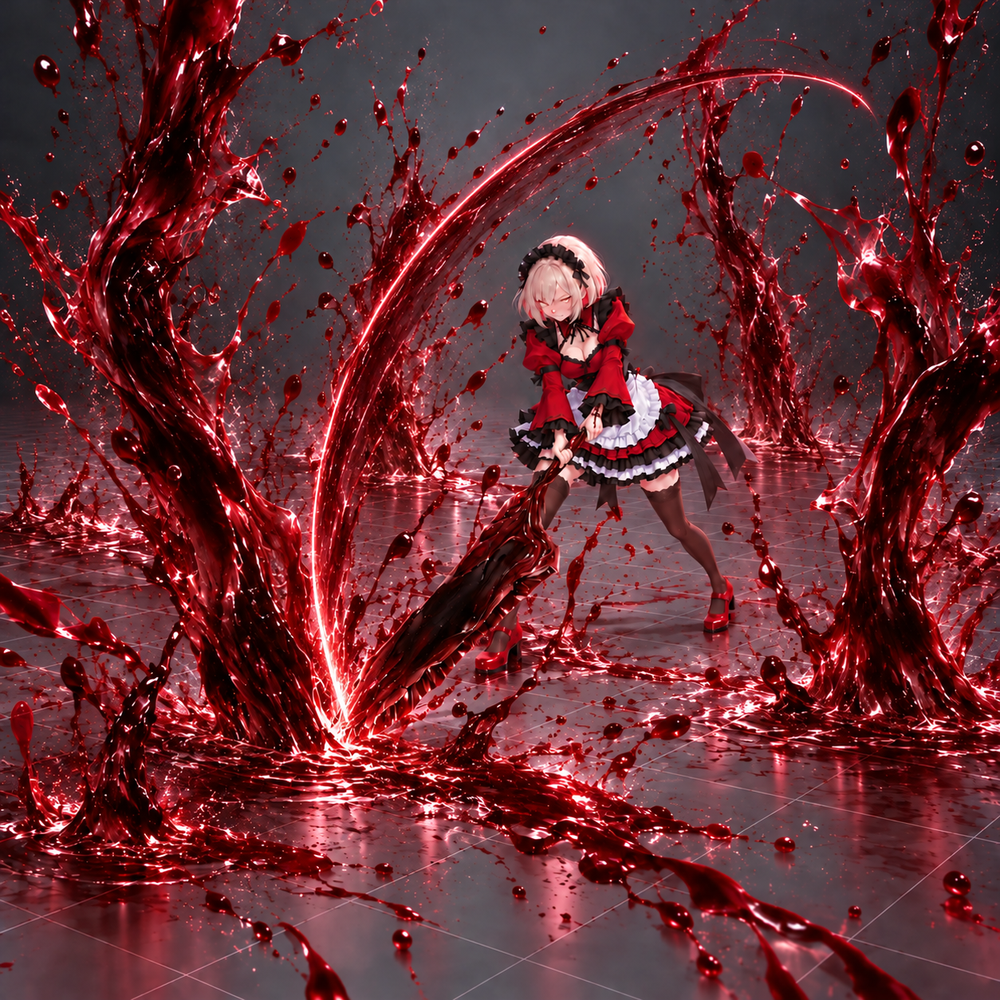
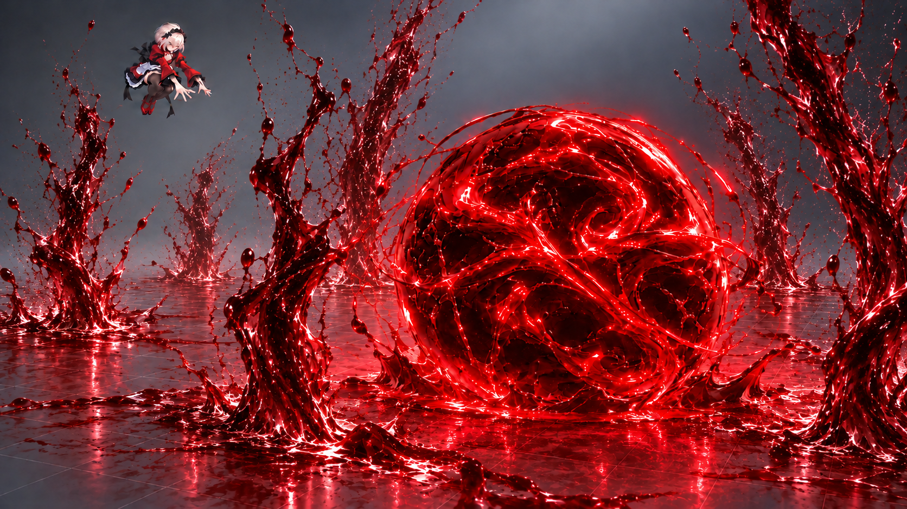
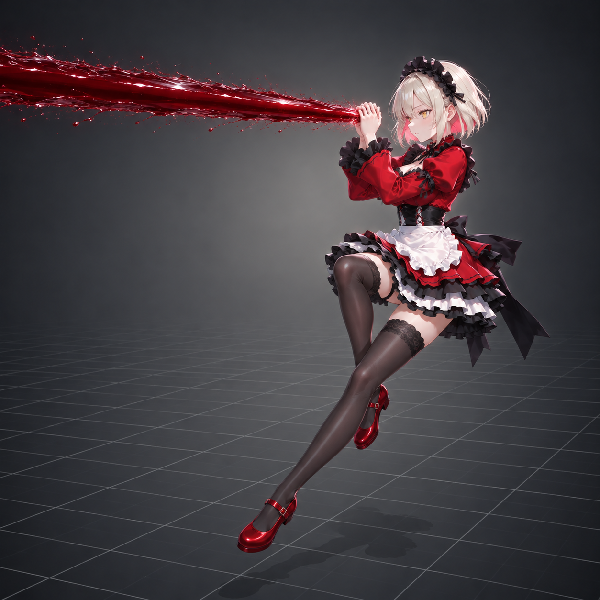
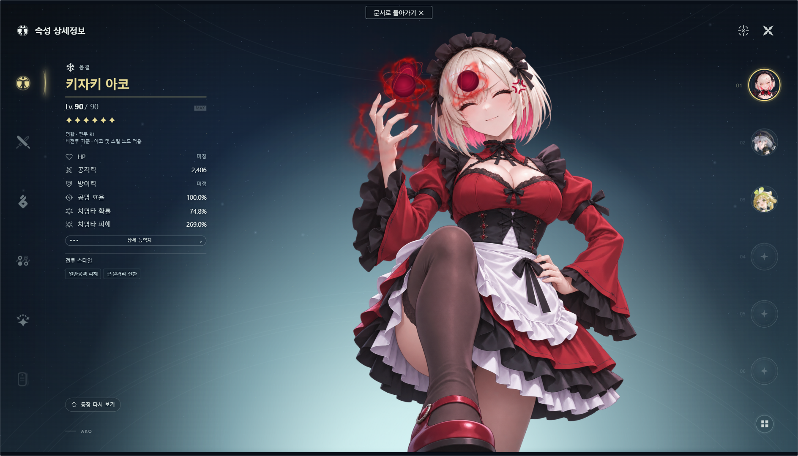

명조 신규 공명자 · 밸런스 포트폴리오
입문 조합의 화력을 정하고
지원 교체의 여지를 남긴
키자키 아코 전투 밸런스 설계
산화·벨리나로 엔드 콘텐츠에 도전하는 기본 성능을 정하고,
지원 교체와 돌파가 상위층 공략의 여유로 이어지게 설계했습니다.

명조 신규 공명자 · 밸런스 포트폴리오
산화·벨리나로 엔드 콘텐츠에 도전하는 기본 성능을 정하고,
지원 교체와 돌파가 상위층 공략의 여유로 이어지게 설계했습니다.
목차
초보자의 공략 목표에서 출발해, 그에 맞춘 수치 설계와 지원·돌파에 따른 성장을 설명합니다.
파트명이나 본문 항목을 누르면 해당 페이지로 이동합니다.
PART 01 · 어떤 성능을 줄 것인가
산화·벨리나로 입문 콘텐츠에 도전하고, 지원 교체와 돌파를 통해 상위층 공략에 여유를 얻도록 목표를 정했습니다.
PART 1 · 어떤 성능을 줄 것인가

응결 일반공격 메인 딜러
계산 기준 · 명함 · 전용무기 R1

일반공격 피해 증폭
계산 기준 · 6돌 · 천년의 회류 R1
회복과 파티 강화
계산 기준 · 명함 · 판타지 변주 R1
| 목표 콘텐츠 | 입문 조합의 목표 |
|---|---|
| 역경의 탑 | 중앙 1·2층 3별을 여유 있게 공략 |
| 종말 매트릭스 | 여러 파티 중 한 조합으로 팀 보너스 기준 충족에 기여 |
벨리나 → 산화 → 아코 순서로 각자의 행동을 마치고 교대하는 사이클을 기준으로 화력을 평가했습니다. 캐릭터 제안서의 입문 설계 ↗
PART 1 · 어떤 성능을 줄 것인가
루크 · 산화 · 벨리나딜러 출시 3.1 · 2026.02.26 구성카멜리아 · 산화 · 벨리나딜러 출시 1.4 · 2024.11.14 구성루크와 카멜리아는 일반공격 피해를 쓰는 메인 딜러입니다. 루크는 청초와 같은 데니아·모니에를 붙인 조합으로도 비교했습니다.
PART 1 · 어떤 성능을 줄 것인가
이보다 화력이 낮으면 4층 3별에 필요한 피해를 제시간에 채울 수 없습니다. 지원 교체와 돌파는 상위층 공략에 여유를 더하도록 설계했습니다.
PART 02 · 그 성능을 어떤 수치로 만들 것인가
정한 총계수와 장비를 바탕으로 각 타격의 피해를 계산하고, 회로 강화량을 조정해 목표 화력에 맞췄습니다.
PART 2 · 그 성능을 어떤 수치로 만들 것인가
아코 · 초기안변주·반주와 자체 계수 강화를 합산했습니다. 에코·조화도 파괴·고정 피해는 별도로 계산합니다.
PART 2 · 그 성능을 어떤 수치로 만들 것인가
| 장비 | 아코에 적용한 효과 | 청초 | 양양·현령 |
|---|---|---|---|
| 전용무기 R1 → R5 | 재련으로 증폭과 저항 무시 강화 일반공격 피해 증폭 12% → 36% 응결 일반공격 저항 무시 10%p → 30%p 전체 속성 피해 보너스 12% → 24% | 옥빛 구름 기류 피해 보너스 최대 56% → 112% 최대 중첩 시 방어력 무시 10% → 20% | 아득히 푸른 하늘 강공격 피해 증폭 36% → 72% 강공격 방어력 무시 12% → 24% |
| 에코 세트 | 명중과 해방으로 R1 화력 보완 2세트 응결 피해 보너스 10% 5세트 명중 시 공격력 최대 20% 해방 후 일반공격 피해 보너스 30% | 악을 씻어내는 마음 2세트 기류 피해 보너스 10% 5세트 조화 밀집 · 이탈 부여 시 크리티컬 피해 +20%p · 기류 피해 +30% | 내려앉은 깃털의 노래 2세트 공명 효율 10% 5세트 암흑 효과 부여 시 크리티컬 +20%p · 강공격 피해 +35% |
| 메인 에코 | 장착으로 주력 공격 강화 일반공격 피해 보너스 25% | 하늘의 기관 인형 · 겁살 메인 장착 시 기류 피해 보너스 10% 조화 밀집 · 이탈 부여 시 추가 10% | 천괴중루 메인 장착 시 인멸 피해 보너스 12% 강공격 피해 보너스 12% |
양양은 재련으로 주력 강공격을 강화하고, 청초는 조화 밀집 · 이탈을 부여해 무기와 에코 효과를 얻습니다.
PART 2 · 그 성능을 어떤 수치로 만들 것인가
| 공격 | 배분 기준 | 1단 | 2단 | 3단 | 4단 | 5단 |
|---|---|---|---|---|---|---|
| 일반공격 | 핏방울을 모으는 동안의 피해 | 179.45% | 199.60% | 243.60% | 310.86% | 531.49% |
| 강화 일반공격 | 해방 뒤 집중 화력과 5단 마무리 보상 | 479.27% | 555.73% | 631.62% | 808.38% | 1,530% |
변주와 공명 스킬로 진입과 자원 보충을 하고, 교대 뒤 적중하는 반주까지 아코 한 사이클에 포함했습니다.
일반공격은 공통 계수에 근거리 1.05배, 원거리 0.95배를 적용했습니다.
PART 2 · 그 성능을 어떤 수치로 만들 것인가

총계수 배분 비율1타 20%2타 20%마무리 60%

총계수 배분 비율직격 25%폭발 75%

타격별 계수1~3타 158.89% × 34타 158.90%
막대 안의 숫자는 구간 길이, 아래 아이콘은 공격 시작부터 센 타격 시점입니다. 붉은 면의 아이콘은 밸런스에서 배정한 후속 타격입니다.
PART 2 · 그 성능을 어떤 수치로 만들 것인가
근거리 · 조정 전핏방울당 30%p근거리 · 채택핏방울당 17.5%p원거리 · 조정 전핏방울당 30%p원거리 · 채택핏방울당 17.5%p핏방울을 보유하면 개당 치명타 피해가 증가합니다. 해방으로 전량 소비하면 개당 효과가 2배로 바뀌어 6초간 적용됩니다. 4개 소비 시 140%p입니다.
아코가 두 번 출전하는 근거리 파티 사이클에서 약 241만 피해 ÷ 35.90초 = 6.71만 DPS입니다. 2층 3별 기준 120초까지 33.3초가 남습니다.
PART 03 · 채택한 성능은 어디까지 성장하는가
입문 조합의 점수 기여, 지원을 바꾼 파티의 화력, 돌파로 오르는 개인 화력을 확인합니다.
PART 3 · 채택한 성능은 어디까지 성장하는가
3.7 S2 단계 3 특이점 확장 1라운드의 사례입니다. 공용강화가 바뀌면 해당 주기의 효과와 유효 타격을 적용합니다.
PART 3 · 채택한 성능은 어디까지 성장하는가
근거리 · 벨리나근거리 · 파수인원거리 · 벨리나원거리 · 파수인기본 조합과 기준 평균의 화력 차이를 두 지원에 약 22%p씩 배분했습니다. 확인된 적 체력으로 환산한 파수인 조합의 3층 시간은 근거리 117.8초 이상, 원거리 122.4초 이상입니다.
PART 3 · 채택한 성능은 어디까지 성장하는가
1돌 강화 중 경직 면역
5돌 회복과 받는 피해 감소
6돌 일반·강화 공격 매 단에 분신 추가
아코는 본인의 출전시간으로 개인 DPS를 구했습니다. 청초·양양은 각자의 사이클 시간을 고정하고, 명함 대비 피해 증가율을 평균했습니다.
PART 04 · 명함 아코를 선택할 이유는 무엇인가
이미 주력 파티를 갖춘 유저가 적의 패턴과 거리에 대응하기 위해 아코를 선택할 이유를 제시합니다.
PART 4 · 명함 아코를 선택할 이유는 무엇인가
PART 4 · 명함 아코를 선택할 이유는 무엇인가
| 콘텐츠와 규칙 | 아코의 대응 | 공략에 주는 이점 |
|---|---|---|
| 홀로그램 전략 제한시간 내 강화된 보스를 처치 | 근거리 패링으로 적 공격을 끊고, 블링크로 회피한 뒤 공격자를 추적 | 공격 기회 확보 패링으로 공진 수치를 깎아 마비를 앞당기고, 회피 뒤 빠르게 공격을 재개 |
| 종말 매트릭스 제한시간 내 적에게 입힌 피해로 점수 획득 | 멀어지거나 체공하는 적은 원거리에서 공격하고, 공격이 끊기면 추적해 다시 적중 | 제한시간 내 유효 피해 제한시간 안에 실제로 적중한 피해가 점수로 이어짐 |
일반공격 1~5단을 연계하는 데 근거리는 186f(3.10초), 원거리는 228f(3.80초)가 걸립니다. 근거리는 다음 패턴에 더 빨리 대응하고, 원거리는 떨어진 적을 계속 공격합니다.
PART 4 · 명함 아코를 선택할 이유는 무엇인가
일반공격 3타의 모션을 사용하고, 계수에는 생략한 1·2타의 보상을 반영했습니다.
| 모드 | 회피 반격 계수 |
|---|---|
| 근거리 | 753.28% |
| 원거리 | 569.77% |
일반공격 항목
18f · 혈액구 파열, 고유 타격
24f · 후속 회피 반격 연계 가능
6.3175%/f × 24f = 151.62%
공명 회로 항목 · 블링크 원 액션 ↗ · 승인 프레임 명세 ↗
60fps 기준입니다. 블링크 뒤에 이어지는 회피 반격은 각 모드의 일반 회피 반격과 같은 계수를 씁니다.
부록

무기·에코·스킬·공명 체인 탭을 눌러 장비와 스킬의 발동 조건, 수치, 돌파 효과를 확인할 수 있습니다.
캐릭터 UI 열기 ↗회피 반격과 블러드 블링크의 최신 수치는 본문 14쪽에 있습니다.
캐릭터 제안서의 입문 설계 ↗ · 두 모드의 공통 자원 운용 ↗
산화·벨리나로 입문 파티를 꾸리고, 벨리나 → 산화 → 아코 순서로 각자의 행동을 마치고 교대하는 사이클에서 기본 화력을 평가했습니다.
| 구성원 | 돌파와 무기 |
|---|---|
| 아코 | 명함 · 전용무기 R1 |
| 산화 | 6돌 · 천년의 회류 R1 |
| 벨리나 | 명함 · 판타지 변주 R1 |
명함은 캐릭터 돌파를 추가하지 않은 상태, R1은 무기의 기본 재련 단계입니다. 기존 지원을 활용하는 조합으로 평가하며, 최신 기준 파티와 모든 구성원의 획득 비용이 같다는 조건을 두지는 않았습니다.
파티 DPS = 한 사이클 동안 파티가 입힌 피해 합계 ÷ 사이클 시간입니다.
시간표의 f는 프레임이며, 이 계산은 60f를 전투시간 1초로 환산합니다.
| 파티 | 파티 DPS | 사이클 피해와 시간 |
|---|---|---|
| 청초 · 데니아 · 모니에 | 119,274.071449 | 피해 2,981,851.786232 ÷ 25.00초 |
| 양양·현령 · 치사 · 수수 | 114,453.289034 | 피해 3,235,212.970015 ÷ (1,696f ÷ 60) |
| 기준 평균 | 116,863.680241 | 위 두 파티 DPS의 산술평균 |
| 루크 · 데니아 · 모니에 | 95,381.73 | 공개 사이클 계산표의 값 |
| 루크 · 산화 · 벨리나 | 52,864.06 | 25초 모형 · 벨리나 2돌 |
| 카멜리아 · 산화 · 벨리나 | 41,350.326990 | 공명효율 100% · 자연 충전 해방 · 240사이클 평균 |
비율 = 각 파티 DPS ÷ 116,863.680241 × 100입니다. 기준 두 파티는 전원 명함·전무 R1의 공개 입력을 사용했습니다.
루크·산화·벨리나는 사이클 최적화가 확정되지 않은 기존 모형이며, 카멜리아도 같은 상태로 돌아오는 최소 사이클는 확정하지 않았습니다. 보조 비교는 이 투자·운용 조건의 성능 위치를 보는 자료로 사용했습니다.
기준 파티의 시전·적중·계수·능력치·버프 입력은 보존한 전체 타격표에서 확인합니다. 같은 시전 안에서도 타격 시점의 상태가 다르면 개별 피해를 계산한 뒤 합산합니다.
일반 타격은 참조 능력치 × 공격 계수 × 피해보너스 배율 × 증폭 배율 × 받는 피해 배율 × 치명타 기대배율 × 방어배율 × 저항배율로 계산합니다. 공격력 증가·피해보너스·증폭은 각각 같은 항끼리 합산하고, 서로 다른 항을 곱합니다.
예를 들어 데니아 변주 한 타격은 2,575.775 × 1.0462 × 1.6 × 1.25 × 1.288 × 2.60925 × (1520/3112) × 0.8 = 7,077.47입니다. 치명타 기대배율은 1 + 0.785 × (3.05 − 1) = 2.60925입니다.
공명절단은 공격력 대신 레벨 기초값·최대 부조화 수치·조화도 파괴 증폭을, 응결 이상 피해는 해당 효과의 계수와 레벨 기초값을 적용하는 별도 피해식으로 계산합니다. 해당 타격은 일반 공격력 피해와 구분해 합산합니다.
필요 DPS = 4층 전체 체력 ÷ 150초이며, 목표 비율 = 필요 DPS ÷ 기준 평균 DPS × 100입니다.
| 층 | 39기 | 40기 | 41기 | 사용한 최대 체력 |
|---|---|---|---|---|
| 중앙 1층 | 5,510,473 | 5,510,473 | 5,510,473 | 5,510,473 |
| 중앙 2층 | 5,818,434 | 5,818,434 | 5,818,434 | 5,818,434 |
| 중앙 4층 | 10,027,823 | 10,017,618 | 10,017,618 | 10,027,823 |
4층은 10,027,823 ÷ 150 = 66,852.153333 DPS, 기준 평균 116,863.680241DPS의 57.20524%입니다. 이를 기본 화력 목표 약 57.2%로 사용합니다.
중앙 1·2층의 3별 기준은 120초, 중앙 4층은 150초입니다. 입문 조합은 1·2층을 여유 있게 공략하고 4층 3별에 도전할 화력을 목표로 삼았습니다.
기준 파티의 4층 환산은 같은 체력으로 10,027,823 ÷ 119,274.071449 ≈ 84.1초, 10,027,823 ÷ 114,453.289034 ≈ 87.6초입니다.
환산 시간은 층 전체 체력을 평균 화력으로 나눈 값입니다. 실전에서는 이동, 패턴 대응, 공격 누락에 따라 시간이 늘어날 수 있습니다.
| 공격 구성 | 청초 | 양양·현령 | 루크 | 초기 아코 |
|---|---|---|---|---|
| 일반·강공·회로 | 3,800.19% | 3,613.87% | 2,421.09% | 8,975% |
| 공명 스킬 | 139.18% | 434.56% | 2,255.29% | 1,470% |
| 해방·연계 후속 | 1,670.11% | 2,326.08% | 1,739.64% | 0% |
| 변주 | 132.63% | 233.18% | 436.02% | 980% |
| 반주 | 800% | 300% | 500.00% | 1,245% |
| 합계 | 6,542.11% | 6,907.69% | 7,352.04% | 12,670% |
초기 아코는 청초의 약 1.94배, 양양·현령의 약 1.83배였습니다. 기존 메인 딜러와 비슷한 계수 규모에서 출발하기 위해 아코의 1사이클 총계수 범위를 7,000~7,200%로 잡았습니다.
루크·산화·벨리나의 25초 사이클에서 루크의 공명 해방 1회, 변주 2회, 반주 1회와 본인 공격의 계수를 합산했습니다. 해방에는 회로가 올려 주는 계수를 반영했습니다. 타격당 계수에 적중 횟수를 곱해 더했으며, 이코르의 칼날 고정 피해와 조화도 파괴 피해는 별도로 계산합니다.
| 효과 | R1 | R5 | 발동과 적용 대상 |
|---|---|---|---|
| 전무 속성 보너스 | 12% | 24% | 상시 · 피해보너스에 합산 |
| 전무 일반공격 증폭 | 12% | 36% | 변주 또는 E 사용 시 15초 · 자신의 일반공격 피해 |
| 전무 응결 저항 무시 | 10%p | 30%p | 같은 발동 구간 · 자신의 응결 일반공격 피해 |
| 에코 2세트 | 응결 보너스 10% | 동일 | 장착 시 적용 |
| 에코 5세트 명중 효과 | 공퍼 10% × 최대 2층 | 동일 | 일반공격 판정의 명중마다 15초 기록 |
| 에코 5세트 해방 효과 | 일반피해 보너스 30% | 동일 | 해방 사용 후 15초 |
| 메인 에코 장착 효과 | 일반피해 보너스 25% | 동일 | 아코의 메인 슬롯 장착 · 능동 사용 불필요 |
전무는 재발동하면 15초로 갱신합니다. 에코의 공격력 증가는 유효한 명중 중 가장 최근 두 건을 기준으로 적용합니다. 중첩을 얻은 타격부터 공격력이 오릅니다. 같은 프레임에 여러 타격이 들어와도 각 타격의 순서대로 중첩을 먼저 갱신한 뒤 피해를 계산합니다.
일반피해 보너스 30%와 메인 장착 25%는 같은 항에 55%p로 합산합니다. 저항 무시는 전무 효과를 받는 타격의 유효 저항에 반영합니다.
| 능력치 입력 | 구성 |
|---|---|
| 기초공격력 | 아코 425 + 전무 587.5 = 1,012.5 |
| 에코 주옵 | 치피 44%p · 응결 30% · 공퍼 30% + 18% × 2 |
| 에코 공퍼 | 주옵 66% + 부옵 17.2% = 83.2% |
| 고정공격력 | 430 |
| 노드 | 치확 8%p · 공퍼 12% |
| 치확 | 기본 5 + 노드 8 + 전무 24.3 + 부옵 37.5 = 74.8% |
| 회로 전 치피 | 기본 150 + 주옵 44 + 부옵 75 = 269% |
| 일반공격 피해 부옵 | 17.28% |
| 지원·세트 발동 전 공격력 | 1,012.5 × (1 + 0.832 + 0.12) + 430 = 2,406.40 |
청초와 양양·현령은 앞에서 비교한 두 기준 파티의 메인 딜러입니다.
「옥빛 구름」은 조화 밀집 · 이탈을 부여할 때 기류 피해 보너스를 R1에서 11.2%씩, R5에서 22.4%씩 얻습니다. 최대 5중첩에 도달하면 지속시간이 30초로 늘어나며 기류 피해가 대상의 방어력을 R1에서 10%, R5에서 20% 무시합니다.
「악을 씻어내는 마음」 2세트는 기류 피해를 10% 높입니다. 5세트는 조화 밀집 · 이탈을 부여하면 15초간 크리티컬 피해 20%p와 기류 피해 30%를 더합니다. 「하늘의 기관 인형 · 겁살」을 메인에 장착하면 기류 피해 보너스 10%를 얻고, 같은 조건에서 15초간 10%를 더 얻습니다.
「아득히 푸른 하늘」은 암흑 효과를 부여한 뒤 8초간 강공격 피해를 증폭하고, 그 피해가 대상의 방어력 일부를 무시합니다. 재련하면 강공격 피해 증폭은 36%에서 72%로, 방어력 무시는 12%에서 24%로 오릅니다.
「내려앉은 깃털의 노래」 2세트는 공명 효율을 10% 높입니다. 5세트는 암흑 효과를 부여하면 15초간 크리티컬 20%p와 강공격 피해 보너스 35%를 더합니다. 서리 효과를 부여하면 10초간 착용자의 공명 효율 1%당 파티 공격력이 0.1%씩, 최대 25%까지 오릅니다. 「천괴중루」를 메인에 장착하면 인멸 피해와 강공격 피해 보너스를 각각 12% 얻습니다.
일반공격은 핏방울을 모으는 동안의 피해, 강화 일반공격은 해방 뒤 집중 화력을 맡깁니다. 강화에 가장 큰 몫을 주고 5단에 마무리 보상을 두었습니다. 변주·공명 스킬은 진입과 자원 보충, 반주는 교대 뒤 남는 피해에 배정했습니다.
계수 배분 초기의 검산에서는 당시 목표인 기준 평균의 70%에 조금 못 미쳤습니다. 기존 공격의 역할을 유지하며 총계수를 85%p 늘렸고, 그중 50%p를 강화 일반공격에 배정했습니다.
| 공격 | 첫 7,000%안 | 프레임 보정 전 7,085%안 |
|---|---|---|
| 변주 | 420% | 425% |
| 공명 스킬 | 635% | 645% |
| 일반공격 1~5단 | 1,450% | 1,465% |
| 강화 일반공격 1~5단 | 3,955% | 4,005% |
| 반주 | 540% | 545% |
| 합계 | 7,000% | 7,085% |
연계 캔슬까지의 프레임에 첫 타격까지 걸리는 프레임의 25%를 더해, 보정에 사용할 시간값을 구했습니다. 일반공격은 5단 시간값에 1.25배를 적용한 뒤, 근거리와 원거리에서 각각 단별 시간 비중을 구해 평균했습니다. 기존 배분과 이 시간 비중을 80:20으로 반영했습니다. 강화 1~4단은 앞에서부터 두 단씩 묶어 50:50, 변주·공명 스킬은 90:10을 적용했습니다. 강화 5단과 반주 계수는 유지했습니다.
변주의 보정용 시간값은 31 + 25 × 0.25 = 37.25, 공명 스킬은 33 + 26 × 0.25 = 39.50입니다. 두 공격의 합계 1,070%를 이 비율로 나누면 변주 몫은 1,070% × 37.25 ÷ (37.25 + 39.50) = 약 519.32%입니다.
기존 배분의 90%와 시간 비율로 구한 계수의 10%를 더하면 변주는 425% × 0.90 + 519.32% × 0.10 ≈ 434.43%입니다. 공명 스킬은 합계에서 변주의 계수를 뺀 635.57%입니다.
| 공격 | 공통 보정 전 | 공통 보정 후 | 근거리 | 원거리 |
|---|---|---|---|---|
| 변주 | 425.00 | 434.43 | 434.43 | 434.43 |
| 공명 스킬 | 645.00 | 635.57 | 635.57 | 635.57 |
| 일반 1단 | 175.00 | 179.45 | 188.42 | 170.48 |
| 일반 2단 | 200.00 | 199.60 | 209.58 | 189.62 |
| 일반 3단 | 235.00 | 243.60 | 255.78 | 231.42 |
| 일반 4단 | 325.00 | 310.86 | 326.40 | 295.32 |
| 일반 5단 | 530.00 | 531.49 | 558.07 | 504.91 |
| 강화 1단 | 480.00 | 479.27 | 479.27 | 479.27 |
| 강화 2단 | 555.00 | 555.73 | 555.73 | 555.73 |
| 강화 3단 | 640.00 | 631.62 | 631.62 | 631.62 |
| 강화 4단 | 800.00 | 808.38 | 808.38 | 808.38 |
| 강화 5단 | 1,530.00 | 1,530.00 | 1,530.00 | 1,530.00 |
| 반주 | 545.00 | 545.00 | 545.00 | 545.00 |
| 합계 | 7,085.00 | 7,085.00 | 7,158.25 | 7,011.75 |
근·원거리 배율은 일반공격에만 적용합니다. 공통 계수의 1.05배가 근거리, 0.95배가 원거리입니다. 각 묶음의 반올림 잔여는 마지막 공격에 반영했습니다.
원거리 5단은 기존 액션 명세의 타격 시작 66f를 계산에서 직격 시점으로 사용하고, 폭발을 70f에 배정했습니다.
아래 시각은 각 공격 시작을 0f로 한 60fps 기준입니다. 변주·스킬·일반공격의 첫 타격은 기존 프레임 명세를 사용하고, 연격과 추가 폭발의 후속 타격 시점은 이번 분할에서 정했습니다.
| 공격 | 타격별 계수 %와 시각 | 연계 캔슬 |
|---|---|---|
| 변주 | 434.43 @25f | 31f |
| 공명 스킬 | 158.89 × 3 @26/28/30f + 158.90 @32f | 33f |
| 근거리 일반 1단 | 188.42 @20f | 30f |
| 근거리 일반 2단 | 209.58 @21f | 30f |
| 근거리 일반 3단 | 255.78 @27f | 36f |
| 근거리 일반 4단 | 146.88 @21f + 179.52 @26f | 30f |
| 근거리 일반 5단 | 111.61 × 2 @27/33f + 334.85 @51f | 60f |
| 원거리 일반 1단 | 170.48 @20f | 30f |
| 원거리 일반 2단 | 189.62 @20f | 30f |
| 원거리 일반 3단 | 69.43 @39f + 161.99 @43f | 48f |
| 원거리 일반 4단 | 88.60 @39f + 206.72 @43f | 48f |
| 원거리 일반 5단 | 126.23 @66f + 378.68 @70f | 72f |
| 강화 1단 | 239.64 + 239.63 @28f | 36f |
| 강화 2단 | 222.29 @32f + 333.44 @38f | 42f |
| 강화 3단 | 157.91 × 3 @30/33/36f + 157.89 @39f | 40f |
| 강화 4단 | 404.19 × 2 @33/43f | 54f |
| 강화 5단 | 1,530.00 @33f | 56f |
| 반주 | 163.50 × 2 @45/51f + 218.00 @57f | 교대 뒤 타격 |
강화 공격은 일반공격 피해 판정을 사용합니다. 강공격은 태세 전환으로 별도 표시합니다.
회로의 보유 중 치명타 피해 증가는 핏방울 1개당 17.5%p, 최대 4개로 70%p입니다. 공명 해방으로 소비할 때는 1개당 35%p로 바꾸어 6초간 적용하며, 4개 소비 시 140%p입니다. 보유 효과와 소비 효과는 중첩하지 않습니다.
각 행동은 시작부터 후속 공격으로 연계할 수 있는 캔슬 시점까지 합산합니다. 시간정지 연출은 전투시간에서 제외합니다. 피해는 순차 교대에서 각 캐릭터가 수행하는 기본 공격 흐름과 교대 뒤 실제로 적중한 반주를 합산합니다.
| 아코의 한 번 출전 | 근거리 | 원거리 |
|---|---|---|
| 변주 | 31f | 31f |
| E | 33f | 33f |
| 일반 1~5단 | 30 + 30 + 36 + 30 + 60 = 186f | 30 + 30 + 48 + 48 + 72 = 228f |
| 강화 1~5단 | 36 + 42 + 40 + 54 + 56 = 228f | 같음 |
| 출전 합계 | 478f · 약 7.97초 | 520f · 약 8.67초 |
| 파티 사이클의 출전 순서 | 근거리 | 원거리 |
| 벨리나 · 해방 경로 | 207f | 207f |
| 산화 | 351f | 236f |
| 아코 | 478f | 520f |
| 벨리나 · 비해방 경로 | 404f | 404f |
| 산화 | 236f | 312f |
| 아코 | 478f | 520f |
| 합계 | 2,154f ÷ 60 = 35.90초 | 2,199f ÷ 60 = 36.65초 |
벨리나의 해방 경로는 변주 76 + 공중 21 + 18 + 낙공 36 + E 24 + 해방의 비정지 구간 32 = 207f입니다. 비해방 경로는 변주 76 + 공중 21 + 18 + 낙공 36 + E 65 + 지상 일반 160 + 점프 3 + 공중 타격 15 + 에코 10 = 404f입니다.
산화는 변주 60 + E 18 + 해방의 비정지 구간 7 + 차지 50 + 직접 기폭 101 = 236f입니다. 백로가 준비된 출전에는 명중까지 76f를 더하고, 근거리 첫 산화에는 해방 재사용의 잔여 39f를 포함해 351f로 계산합니다.
전투 시작은 아코의 비전투 패시브로 핏방울 1개를 준비한 뒤 일반 교대로 벨리나를 출전시킵니다. 첫 벨리나는 지상 일반 3~5 → E·해방 → 지상 일반 1~5 → 점프 공중 1타 후 교대의 342f, 5.70초를 사용합니다. 이후 사이클은 변주 진입과 핏방울 2개 이월로 이어집니다. 개막 준비는 첫 사이클에서 한 번만 계산합니다.
| 사건 | 핏방울 | 협주 | 공명에너지 |
|---|---|---|---|
| 비전투 중 0개 | 1개 준비 | — | — |
| 변주 첫 명중 25f | +1 | 10 | 10 |
| E 첫 명중 26f | +1 | 20 | 20 |
| 일반 각 단 첫 명중 | 5단 종료에 +1 | 각 6 | 각 5 |
| 해방 | 보유량 전량 소비 | — | 100 소비 |
| 강화 각 단 첫 명중 | 5단 연계 56f에 +1 | 각 12 | 각 7 |
최대 보유량은 4개이며, 해방은 그때 가진 자원을 전량 소비합니다. 보유 효과와 소비 효과는 중첩하지 않습니다. 변주·E의 첫 명중은 핏방울 획득 → 피해 → 협주·공명에너지 순서여서 첫 피해에도 보유 중 치명타 피해 증가가 적용됩니다.
협주 생성량은 120, 상한과 교대 발동 기준은 100입니다. 한 출전의 자가 공명에너지는 90이며 대기 공명전달 50%와 수신자의 공명효율을 적용합니다. 아코 E는 8초, 해방은 15초, 산화 해방은 16초, 벨리나 해방은 25초의 재사용시간으로 반복 검사했습니다.
강화 5단은 33f 적중, 56f 자원 획득과 교대, 66f 기본 재생 복귀를 구별합니다. 아산벨은 벨리나 → 산화 → 아코를 두 차례 수행해 같은 자원·재사용 상태로 돌아오는 구간을 파티 사이클로 삼았습니다. 120회 반복 검사에서 자원·재사용 조건을 충족했습니다.
핏방울 획득과 소비의 기본 흐름은 캐릭터 제안서의 공통 자원 운용 ↗에서 확인할 수 있습니다.
계산 조건은 공격자 90레벨 · 적 100레벨 · 기본 저항 20%입니다. 전무의 저항 무시 10%p가 적용되는 타격은 유효 저항 10%로 계산합니다.
타격 기대피해 = 참조 능력치 × 공격 계수 × (1 + 피해보너스 합) × (1 + 피해증폭 합) × (1 + 받는 피해 증가) × 치명타 기대배율 × 방어배율 × 저항배율입니다.
| 항 | 계산 |
|---|---|
| 공격력 | (캐릭터 기초공격력 + 무기 기초공격력) × (1 + 공퍼 합) + 고정공격력 |
| 계수 | 188.42%이면 1.8842 |
| 치명타 기대 | 1 + min(치확, 1) × (치피 − 1) |
| 방어 | (800 + 8 × 공격자 레벨) ÷ [(800 + 8 × 공격자 레벨) + (792 + 8 × 적 레벨) × (1 − 방어 감소) × (1 − 방어 무시)] |
| 유효 저항 r | 저항 감소와 무시를 반영한 값 |
| 저항배율 | r < 0: 1 − r/2; 0 ≤ r < 0.8: 1 − r; r ≥ 0.8: 1/(1 + 5r) |
대표 근거리 일반 1단은 파티 사이클의 642f에 적중합니다. 계수 1.8842 × 공격력 3,393.5875 × 보너스 2.3628 × 증폭 1.65 × 치명타 기대 2.65682 × 방어 1520/3112 × 저항 0.9 = 29,114.25입니다.
| 대표 타격의 항 | 적용값의 구성 |
|---|---|
| 공격력 | 1,012.5 × (1 + 에코 0.832 + 노드 0.12 + 세트 0.20 + 지원 0.775) + 430 |
| 피해보너스 | 응결 40 + 전무 12 + 백로 12 + 일반 부옵 17.28 + 세트 30 + 메인 25 = 136.28% |
| 증폭 | 벨리나 15 + 산화 38 + 전무 12 = 65% |
| 치명타 기대 | 1 + 0.748 × (2.69 + 보유 3개 × 0.175 − 1) |
| 받는 피해 증가 | 이 타격은 0% |
대표 시점에서는 직전 해방의 세트 효과가 672f에 끝나므로 799f 일반 5단에는 적용하지 않습니다. 808f 해방으로 효과를 다시 만들고 836f 강화 1단에는 세트와 소비 치피를 적용합니다. 소비 치피는 1168f까지, 세트는 1708f까지이며 종료 프레임은 포함하지 않습니다.
| 지원 효과 | 갱신과 종료 |
|---|---|
| 벨리나 고유 공퍼 20% | 해방·회로·반주에서 갱신 · 각 발동부터 20초 |
| 치유 세트 공퍼 15% | 회복 관련 발동으로 갱신 · 마지막 갱신부터 30초 |
| 벨리나 에코 공퍼 10% | 에코 적중부터 20초 |
| 산화 6돌 공퍼 10% × 2 | 기폭 피해 처리 뒤 획득 · 최근 획득부터 20초 |
| 산화 전달 세트 공퍼 22.5% | 아코 진입부터 15초 또는 교대까지 |
| 산화 일반공격 증폭 38% | 아코 진입부터 14초 또는 교대까지 |
아코가 교대하면 산화 증폭과 백로가 끝나므로 반주는 이 효과를 받지 않습니다. 반주는 자신의 적중 때 아직 남은 소비 치피와 적용 가능한 효과만 받습니다. 치명타는 평균 기대값으로 계산하며 실제 사이클의 피해량은 치명타 발생과 명중 여부에 따라 달라집니다.
채택한 근거리 화력은 67,122.521014 DPS입니다. 2층 체력은 잡몹 612,275 × 3 + 보스 3,981,609 = 5,818,434입니다. 체력을 채택 DPS로 나누면 2층 86.7초이며, 3별 기준인 120초까지 33.3초가 남습니다. 같은 방식으로 4층 체력 10,027,823을 나누면 149.4초입니다.
| 근거리 대조 항 | 값 | |||
|---|---|---|---|---|
| 4층 필요 DPS | 66,852.153333 | |||
| 35.90초 동안 필요한 파티 피해 | 2,399,992.30 | |||
| 지원 둘의 피해 | 산화 232,180.70 + 벨리나 24,317.28 = 256,497.98 | |||
| 필요한 아코 피해 | 2,399,992.30 − 256,497.98 = 2,143,494.32 | |||
| 현재 아코 피해 | 2,153,200.52 | |||
| 현재 파티 피해 | 2,409,698.50 | |||
| 현재 DPS | 67,122.521014 | |||
| 모드 | 보유 중 치명타 피해 증가 30%p DPS | 17.5%p DPS | 사이클 시간 | 최종 비율 |
| 근거리 | 78,785.14 | 67,122.521014 | 35.90초 | 57.436596961% |
| 원거리 | 76,431.90 | 65,072.092335 | 36.65초 | 55.682049547% |
| 근거리 피해 구성 | 피해량 | 파티 비중 | ||
| 아코 일반 | 412,472.91 | 17.12% | ||
| 아코 강화 | 1,525,260.16 | 63.30% | ||
| 아코 변주 | 53,637.16 | 2.23% | ||
| 아코 E | 82,537.61 | 3.43% | ||
| 아코 반주 | 79,292.68 | 3.29% | ||
| 산화 | 232,180.70 | 9.64% | ||
| 벨리나 | 24,317.28 | 1.01% |
한 마리분 피해 점수는 같은 라운드에서 얻은 점수를 적들의 체력 감소 비율 합으로 나누어 구했습니다. 예를 들어 6,857 ÷ (1 + 0.4653) ≈ 4,679.6점이며, 다른 기록과 함께 R1 일반 보스 한 마리분 4,680점을 사용했습니다.
4,680점 × 1,000,000 ÷ 환산율 834 ≈ 561만 HP입니다. 같은 환산율에서 아산벨의 120초 화력은 약 6,718점이고, 당시 받는 피해 증가 20%를 반영하면 약 8,060점입니다.
피해 점수 = 유효 피해 × 라운드별 환산율 ÷ 1,000,000, 보스 체력 = 한 마리분 피해 점수 × 1,000,000 ÷ 환산율입니다.
| 라운드 | 일반 보스 한 마리분 점수 | 환산율 | 역산 체력 |
|---|---|---|---|
| R1 | 4,680 | 834 | 약 5,611,511 |
| R2 | 9,158 | 960 | 약 9,539,583 |
| R3 | 20,222 | 1,043 | 약 19,388,303 |
R3 직접 관측에서는 미믹 15,278피해에 17점, 일반 적 37,301피해에 38점이 표시되었습니다. 환산값 17.524점과 38.905점의 정수 부분이 맞았고, 18파티의 기록 합계 170,484점에 대해 계산은 170,477.5622점이었습니다.
| 라운드 | 일반 적 환산율 | 미믹 환산율 | 미믹 처치 보너스 |
|---|---|---|---|
| R1 | 834 | 918 | 1,000 |
| R2 | 960 | 1,055 | 1,000 |
| R3 | 1,043 | 1,147 | 1,000 |
라운드별 환산율과 R1 미믹 보너스는 게임 설정에서 확인한 값입니다. 제한시간의 점수는 실제 유효 타격의 환산 점수와 발생한 처치 보너스를 합산합니다. 유효 피해는 적의 남은 HP까지이며, 제한시간에 끝까지 수행하지 못한 마지막 사이클은 실제로 적중한 타격만 셉니다.
약 7,000점의 판단에는 당시 받는 피해 증가 20%를 반영했습니다. 적 등장과 미스를 고려한 여유는 그 사례의 판단이며, 다른 주기의 고정 손실률로 사용하지 않습니다.
파수인 준비는 강화 변주 81 + 일반 1~4단 154 + 회로 강공격 48 + E 39 + 시간정지를 제외한 해방 0 + 에코 10 = 332f입니다. 공개 동작에서 시간정지 구간을 제외한 연결값을 사용했습니다.
| 파티 사이클의 출전 순서 | 근거리 | 원거리 |
|---|---|---|
| 파수인 | 332f | 332f |
| 첫 산화 | 312f | 312f |
| 첫 아코 | 478f | 520f |
| 두 번째 산화 | 406f | 364f |
| 두 번째 아코 | 494f | 536f |
| 사이클 시간 | 2,022f · 33.70초 | 2,064f · 34.40초 |
두 번째 산화에는 해방 재사용 대기 근거리 170f·원거리 128f, 두 번째 아코에는 해방 재사용 대기 16f가 포함됩니다. 파수인 장판은 해방에서 30초간 유지되고 다음 사이클의 강화 변주로 종료됩니다.
| 결과 | 근거리 | 원거리 |
|---|---|---|
| 파티 DPS | 84,044.841344 | 80,869.172626 |
| 기준 평균 대비 | 71.92% | 69.20% |
| 아산벨 대비 증가 | 25.21% | 24.28% |
| 중앙 3층 화력 환산 | 117.8초 이상 | 122.4초 이상 |
| 중앙 4층 화력 환산 | 119.3초 | 124.0초 |
| 4층 150초까지의 여유 | 30.7초 | 26.0초 |
| 층 | 39기 | 40기 | 41기 | 자료 조건 |
|---|---|---|---|---|
| 중앙 3층 | 9,492,811 이상 | 9,900,994 이상 | 9,900,994 이상 | 일부 잡몹 누락으로 하한 |
확인한 최대 체력 9,900,994를 파수인 조합의 근·원거리 DPS로 각각 나눴습니다. 일부 잡몹 체력이 빠져 환산 시간은 하한입니다.
후속 맞춤 지원의 78%·100%는 이 파수인 결과와 별도로 부여한 목표이며, 신규 2번 캐릭터의 개별 스킬·계수 설계로 확대하지 않습니다.
| 돌파 | 수치와 처리 |
|---|---|
| 1돌 | 본체 강화 피해보너스 30%p · 강화 중 경직면역 |
| 2돌 | 보유 17.5→30%p/개 · 소비 35→60%p/개 · 4개 소비 240%p/6초 |
| 3돌 | 본체 강화 1~5단 계수 ×1.30 |
| 4돌 | 해방 시 파티 공격력 20% · 20초 · 기존 공퍼와 합산 |
| 5돌 | 해방 시 최대 HP 20% 즉시 회복 · 강화 중 받는 피해 20% 감소 |
| 6돌 | 분신 공통 일반공격 계수 ×1.25 · 일반 매 단 반대 모드 1개 · 강화 매 단 두 모드 각 1개 |
1돌과 5돌의 강화 중 효과는 강화 종료·6초 만료·교대 중 먼저 오는 시점에 끝납니다. 회로의 소비 치피 6초는 별도 효과로 처리합니다.
분신은 본체와 병행하며 자체 적중시각의 버프를 적용합니다. 본체 전용 1·3돌은 분신에 적용하지 않고, 추가 자원 획득과 재귀 분신을 만들지 않습니다. 생성된 공격은 교대 뒤에도 마칩니다.
개인 DPS = 아코의 피해 합 ÷ 아코 자신의 출전시간입니다. 대표 근거리 파티 사이클에서 아코의 두 출전시간을 합하면 956f, 15.933333초이며, 명함과 각 돌파에 같은 행동 시간표를 사용했습니다.
| 돌파 | 아코 개인 DPS | 명함 대비 누적 | 직전 대비 | 청초·양양 평균 누적 |
|---|---|---|---|---|
| 명함 | 135,138.11 | 0% | — | 0% |
| 1돌 | 147,613.92 | 9.23% | 9.23% | 11.08% |
| 2돌 | 176,709.59 | 30.76% | 19.71% | 27.99% |
| 3돌 | 216,503.30 | 60.21% | 22.52% | 54.90% |
| 4돌 | 229,262.57 | 69.65% | 5.89% | 64.65% |
| 5돌 | 229,262.57 | 69.65% | 0% | 65.55% |
| 6돌 | 380,487.53 | 181.55% | 65.96% | 147.77% |
청초·양양 비교선은 각자 명함을 0%로 정규화한 공개 개인 사이클 피해의 증가율을 같은 가중치로 평균했습니다. 캐릭터별 사이클 시간을 고정해 환산한 참고선이며, 아코의 파티 증가율을 섞지 않습니다.
같은 산화·벨리나에서 2돌의 4층 화력 환산은 근거리 117.2초, 원거리 120.7초입니다. 높은 돌파의 실제 활용은 지원 투자와 함께 보며, 산화·벨리나 고정 계산은 아코 자체의 투자 효과를 분리해 확인하는 조건입니다.
현재 파티의 화력을 유지하면서, 블러드 블링크와 두 모드에 명함의 선택 이유를 두었습니다.
입문 조합의 성능과 지원·돌파의 성장을 확보해도, 이미 다른 주력 파티를 갖춘 유저에게는 지금 명함 아코를 선택할 성능적 이유가 필요합니다. 이후 투자로 성장한다는 설명만으로 현재 명함의 수요를 대신할 수는 없습니다.
여우의 별자리가 약하다는 평가를 계기로, 의도한 포지션이 있어도 현재 명함의 성능적 매력을 따로 점검해야 한다고 보았습니다. 외형적 매력은 상품의 기본 조건이므로, 여기서는 전투에서 아코를 선택할 이유를 설명합니다.
현재 아코 파티를 최신 완성 파티 수준의 화력으로 올리면, 이후 일반공격에 맞는2·3번 자리의 강화폭이나 조건을 제한해야 합니다. 입문 조합의 화력과 후속 지원의 성장 여지를 유지하면서, 이미 설계한 블러드 블링크와 두 모드의 운용 안정성을 명함의 선택 이유로 삼았습니다.
| 명함에서 제공할 가치 | 전투에서 선택할 이유 |
|---|---|
| 블러드 블링크 | 적의 공격에 대응한 뒤 공격자를 추적해 교전 재개 |
| 근거리 모드 | 패링으로 적의 공격을 끊고 다음 공격 기회 확보 |
| 원거리 모드 | 거리 간극과 공중 체공 때문에 공격하지 못하는 상황에 대응 |
두 모드는 자원 획득·전량 소비·강화공격이라는 같은 운용을 사용합니다. 보스에 맞는 선택을 하면서도 별도 사이클을 다시 익히거나 잦은 전환을 요구하지 않도록 했습니다.
기존 설계의 입력·추적·분기는 블러드 블링크 ↗, 공통 운용과 거리 대응은 두 모드와 반복 공략 ↗에 연결합니다.
패링의 공격 중단과 공진 수치 감소·마비 규칙은 게임 내 전투 안내의 패링 ↗·마비 상태 ↗를 따릅니다. 이 공통 전투 규칙을 근거리의 운용 가치에 연결하고, 공격·회피 반격의 계수 보상은 14에서 따로 설명합니다.
홀로그램 전략은 제한시간 내 강화된 보스를 상대하고, 앞 단계를 통과하면 다음 난이도를 개방하는 보스 도전입니다. 보스 패턴에 대응한 뒤 공격을 잇는 능력이 처치 성공에 기여하도록 배분했습니다. 홀로그램 전략 소개 ↗
매트릭스는 입힌 피해를 점수로 계산합니다. 특이점 확장에서는 적이 목록 순서대로 반복 출현하고, 라운드 진행에 따라 체력이 커지며 위기 진화가 추가됩니다. 따라서 블링크의 기여는 제한시간 안에 확보한 유효 피해로 판단합니다. 피해를 점수로 바꾸는 계산은 본문 09쪽에서 설명했습니다. 게임 튜토리얼·포인트 획득 ↗ · 특이점 확장 ↗
| 같은 상황에서 비교할 경로 | 함께 셀 피해와 시간 |
|---|---|
| 일반 회피 후 교전 재개 | 회피에 쓴 시간과 교전 재개 뒤 유효 피해 |
| 블링크 성공 후 교전 재개 | 성공까지 기다린 시간과 교전 재개 뒤 유효 피해 |
| 블링크 대기 만료 또는 취소 → 공격 재개 | 대기·복귀 점유와 그동안 생략한 공격 |
적의 공격 시각·거리·높이·초기 자원·초기 공격 단계·장비·버프 종료 시각을 같게 두고, 공통 종료 시점의 유효 피해와 남은 자원을 비교합니다. 이 조건에서 두 대응이 확보한 유효 피해와 공격 재개 시간을 비교합니다.
블러드 블링크 ↗ · 추적 명세 ↗ · 승인 프레임 명세 ↗
| 비교 대상 | 대응 일반공격 | 회피 반격 | 같은 타격의 추가분 | 생략 공격 | 추가분÷생략 공격 |
|---|---|---|---|---|---|
| 카멜리아 기본 · 일반3타 | 152.10% | 298.20% | 146.10%p | 일반1·2타155.49% | 약93.96% |
| 카멜리아 만개 · 넝쿨의 춤2타 | 91.26% | 226.66% | 135.40%p | 넝쿨의 춤1타96.33% | 약140.56% |
| 루크 지상 · 일반2타 | 150.40% | 251.80% | 101.40%p | 일반1타81.12% | 125% |
반격 전체 계수만 비교하지 않고, 같은 타격에 더해지는 계수와 생략되는 공격을 함께 비교했습니다. 아코 근거리는 루크의125%, 원거리는 카멜리아 기본 상태의약93.96%를 생략 공격 보충 비율의 기준으로 선택했습니다.
근거리 회피 반격＝255.78＋(188.42＋209.58)×1.25＝753.28%입니다.
원거리 회피 반격＝231.42＋(170.48＋189.62)×(146.10÷155.49)≒569.77%입니다. 기존3타의 직격·파열 비율을 유지해170.94%＋398.83%로 나눴습니다. 모션은 일반3타를 재사용하지만 일반3타 계수를 그대로 적용하지는 않습니다.
일반공격1·2타는 두 모드 모두30＋30＝60프레임을 사용합니다. 계수는 근거리398.00%, 원거리360.10%이며 평균은379.05%입니다. 고유 타격은 두 모드가 공유하므로 이 공통 단가를 비교 기준으로 사용했습니다.
프레임당 기준 계수＝379.05%÷60＝6.3175%/프레임
고유 타격 계수＝6.3175%×24＝151.62%
회피 반격에 성공 보상을 배정하고, 블링크 고유 타격에는 추가 동작에 해당하는 일반공격의 프레임당 계수(100%)를 적용했습니다. 보충 비율(125%·약 93.96%)은 각 모드의 회피 반격 계수에만 반영했습니다.
60fps 기준으로, S0은 적의 공격을 감지해 블링크가 성공한 순간입니다. 아래 시간은 캐릭터 세션에서 사용자가 승인한 동작 설계값입니다.
| 성공 후 시점 | 동작 | 계산에 적용하는 값 |
|---|---|---|
| S0~12프레임 | 재출현하며 적을 물방울로 감쌈 | 고유 공격 시작 |
| S12~18프레임 | 손을 쥐어 혈액구 압축 | 타격 준비 |
| S18프레임 | 혈액구 파열 | 고유 타격151.62% |
| S24프레임 | 후속 공격으로 연계 가능 | 고유 공격 점유0.4초 |
| S39프레임 | 캔슬하지 않았을 때 연출 종료 | 연계 후 다시 더하지 않는 후딜 |
캔슬부터 연출 종료까지15프레임이며, 타격부터 캔슬까지는6프레임입니다. 후속 회피 반격은 S24부터 시작할 수 있습니다. 근거리는 후속 시작 후27프레임에 적중하고36프레임에 다음 공격으로 연결합니다. 원거리는39프레임에 투사체를 발사하고48프레임에 다음 공격으로 연결하며, 실제 적중은 투사체의 비행과 충돌 시점으로 계산합니다.
고유 타격과 후속 반격을 모두 사용한 기초 계수 합은 근거리904.90%, 원거리721.39%입니다. 각 타격 시점의 버프를 따로 적용합니다. 이 합계 자체를 실제DPS 상승률로 해석하거나, 블링크를 사용하지 않은 기본 파티 사이클의 총계수·파티 DPS에 더하지 않습니다.
근거: 설계 판단·계산 기준의11-3절 ↗ · 회피 반격·블링크 계산 기록 ↗ · 승인 프레임 명세.
채택한 설정을 항목별로 확인할 수 있도록 기존 캐릭터 화면을 연결합니다.
| UI의 확인 탭 | 수치 문서와 연결할 설정 |
|---|---|
| 속성 상세정보 | 기본 능력치 · 치확·치피 · 노드와 에코 능력치 |
| 무기 | 붉은 잔향의 촛대 R1 · 발동 조건과 적용 대상 |
| 에코 | 세트 효과 · 메인 슬롯 장착 효과 |
| 스킬 | 일반 회피 반격은 일반공격 항목, 블러드 블링크 고유 타격·후속 연결은 공명 회로 항목 |
| 공명 체인 | 1~6돌의 수치와 분신 규칙 |
기존 캐릭터 UI 열기
기존 UI는 캐릭터 화면의 구현 예시로 연결합니다. 이번 원고에서 추가한 반격 수치와 최신 작성 기준을 UI에 반영하는 작업은 후속 제작 단계입니다.